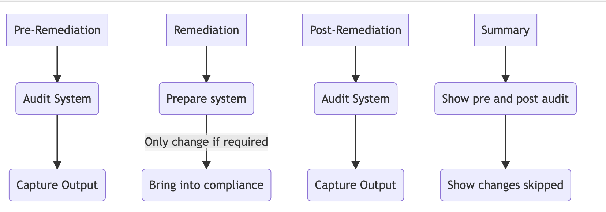

Automated Security Benchmark - Auditing and Remediation


MindPoint Group - A Tyto Athene Company’s (TYTO) Ansible-Lockdown Overview
Our ReadtheDocs elaborates the resources, significance and objective of using our Automated Security Benchmark for auditing and remediation of system security. Our TYTO Ansible roles can be applied to systems to improve security posture, meet compliance requirements, and deploy without disruption after due diligence. Security hardening is achieved through the use of industry-recognized benchmarks CIS and DISA STIG, which provide open-source licensed configurations to bring systems into security compliance. The content delivered consists of an audit component based on GOSS that scans a host for compliance and a remediate component that can be run centrally using an Ansible Deployment Server to bring host(s) into compliance. Our open-source development/release process composes of TYTO’s Ansible-Lockdown GitHub main/devel branches and ansible-galaxy updates that aligned with new benchmark versions.
Why should this role be applied to a system?
There are three main reasons to apply this role to systems:
1. Improve security posture
The configurations from the adopted benchmark add security and rigor around multiple components of an operating system, including user authentication, service configurations, and package management. All of these configurations add up to an environment that is more difficult for an attacker to penetrate and use for lateral movement.
2. Meet compliance requirements
Some deployers may be subject to industry compliance programs, such as PCI-DSS, HIPAA, ISO 27001/27002, or NIST 800-53. Many of these programs require hardening standards to be applied to systems.
3. Deployment without disruption
Security is often at odds with usability. The role provides the greatest security benefit without disrupting production systems. Deployers have the option to opt out or opt in for most configurations depending on how their environments are configured.
What is security hardening?
Based upon industry recognized benchmarks and best practices, using leading products to enable highly adjustable configurations to bring your systems/platforms into security compliance.
Open-Source (MIT licensed)
Community supported as standard
Enterprise support available
Configuration-as-code
Highly configurable to work with your systems
The content delivered is based upon either one of the two major contributors to the security best practices in the IT industry.
Center for Internet Security (CIS):
A global IT community of experts helping to build, document sets of benchmarks to produce industry best security practices.
CIS Benchmarks are vendor agnostic, consensus-based security configuration guides both developed and accepted by government, business, industry, and academia.
or
What is provided?
The content provided is open-source licensed configurations to assist in achieving or auditing compliance to one of the benchmark providers listed above.
This consists of two components:
Audit
Runs a small single binary on the system written in GO called GOSS.
Enables you to very quickly scan your host and output the status of compliance for your host.
Remediate
Has the ability to run from a central location using the configuration management tool ansible.
Can assist with bringing your host into compliance for the relevant benchmark.
Both can be run alone or in conjunction with each other.
{kind=link}

How is this written?
We analyze each configuration control from the applicable benchmark to determine what impact it has on a live production environment and how to best implement a way to audit the current configuration and how to achieve those requirements using Ansible. Tasks are added to the role that configure a host to meet the configuration requirements. Each task is documented to explain what was changed, why it was changed, and what deployers need to understand about the change.
Deployers have the option to enable/disable every control that does not suit their environments needs. Every control item has an associated variable that can be used to switch it on or off.
Additionally, the items that have configurable values, i.e. number of password attempts, will generally have a corresponding variable that allows for customization of the applied value. It is imperative for each deployer to understand the regulations and compliance requirements that their organization and specific environments are responsible for meeting in order to effectively implement the controls in the relevant benchmark.
Baselines are typically designed for the x86_64 architecture. But, with the growing popularity of ARM64/aarch64 systems (AWS Graviton, Azure Ampere, Google Tau T2A), we have extended our support for hardening on ARM as well. This rollout brings certain challenges, particularly regarding the audit component and auditd syscall differences, and it is not officially covered by the baseline provider. However, we strive to provide support for ARM as part of our pipelines.
For detailed ARM64 guidance, see ARM64/aarch64 Architecture Guide.
Development Process
Lifecycle of releases and branches
While Remediate and Audit are individually managed processes, nevertheless, some of the content is linked. There are occasions where both need updating or just one of them.
As a rule, our goal is to abide to the following lifecycle process for branches and releases that include ansible-galaxy sync updates. Being community, we have direct customer requests and requirements that take priority in releases. For a more in depth Overview
Branches
Remediate
devel branch
Staging area for bug fixes, PRs and new benchmarks.
Default and working development branch.
We aim to get majority of PRs merged to devel between 2-4 weeks.
Community Collaboration PR (Pull Request) Branch.
main branch (The release branch)
We merge from devel to main branch.
main branch is dependent on the severity and impact of issues closed.
Routinely, a release alignment is every 8-12 weeks (sometimes much quicker).
Once a new CIS/STIG benchmark gets released, we aim to merge the new tagged release (2-4 weeks).
The major releases are sourced and linked to ansible-galaxy Roles.
Audit
benchmark_version
As these are very bespoke for each release the branches are named after the version of the benchmark it is to test. Allowing the playbook to test for the correct settings for that version
RHEL9-CIS e.g. benchmark_v2.0.0
Demos